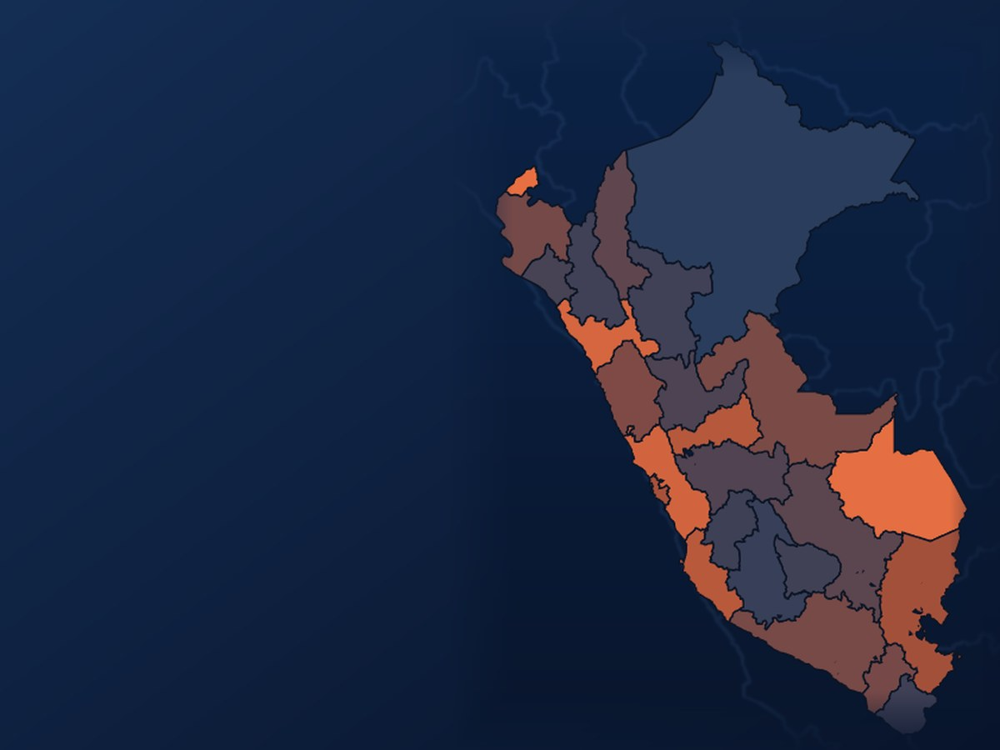

Perú · 2010–2025Peru · 2010–2025 Criminalidad por regionesCrime by region 25,3 %25.3%víctimas de un delito (2025)crime victims (2025) ×8,5×8.5denuncias de extorsión desde 2018extortion reports since 2018 10,110.1homicidios por 100 mil (2024)homicides per 100k (2024)Dashboard y reel · Noviembre 2026Dashboard and reel · November 2026
Menos víctimas, más violencia: la criminalidad en las 26 regiones del PerúFewer victims, more violence: crime across Peru's 26 regions
- PreguntaQuestion
- ¿Qué regiones concentran los delitos más graves y cómo cambiaron entre 2010 y 2025?
- Which regions concentrate the most serious crimes, and how did that change between 2010 and 2025?
- ResultadoResult
- Las víctimas de algún delito bajaron de 40,0 % (2011) a 25,3 % (2025), pero las denuncias de extorsión se multiplicaron por 8,5: de 3223 en 2018 a 27 292 en 2025.
- The share of people who were victims of a crime fell from 40.0% (2011) to 25.3% (2025), but extortion reports grew 8.5-fold: from 3,223 in 2018 to 27,292 in 2025.
Python · pandas · Plotly · datos abiertos del MininterPython · pandas · Plotly · Ministry of the Interior open data